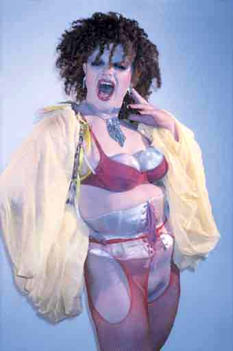

| April 2003 |
| SKABERI | |
| Skribent | Ramona Macho |
| Dialog | redaktionpanbladet.dk |
| Tema | Straight acting |
| Fotoserie | Privatfoto |

Det med pikken i røven står naturligvis usagt, for det er efterhånden sådan noget, der ligger mellem linjerne. En "gennemsnitsbøsse", som den interviewede kalder sig, kunne aldrig drømme om at sige pik i røv til hetero-pressen. For hvis man vil være ligesom "alle andre" ( læs: heteroerne) skal man ikke skilte med det, der gør en anderledes. Hvis man vil være politisk korrekt i dag, vover man allerhøjest at påpege "forskellen" ved at nævne, at man elsker en af samme køn. At elske hinanden kan alle jo sætte sig ind i, selv den søde gamle blåhårede puddelhunds-pensionist.
Som autoriseret drag-freak kender jeg efterhånden en hel del til det at skille sig ud fra mængden. Jeg blev af samme grund fornyligt inviteret ind i et tv-studie. Programmet omhandlede "flirt" og en drag king og jeg skulle repræsentere "den vilde homokultur". Meningen var vist, at vi skulle fortælle dem, at vi er grænseløse og at intet er os helligt. Da reporteren bramfrit udtalte, at alt jo kan lade sig gøre i homo-verdenen og at alle er så åbne og søde, var jeg nødsaget til at svare nej. Hun stirrede først mundlam, dernæst irriteret på mig og optagelsen måtte tages om. Jeg svarede ikke det, jeg blev bedt om.
Når jeg kommer med disse to eksempler på homo-besøg i heteropressen, er det for at anskueliggøre det dilemma, vi homoer befinder os i . På den ene side er vi omsider blevet så normale og respektable at selv dronningen inviterer os indenfor. På den anden side er medierne så sultne efter sensationer, at de ringer os op konstant og viser hvad som helst i primetime; Selv bussemænd i Utterslev mose og syngende drag-queens i Hit med sangen.
Al denne medie-fokuseren på os bøsser og lesbiske tager de fleste af os imod med kyshånd. Det betyder øget synliggørelse af minoriteten (og os selv); Noget vi i det store hele kan blive enige om er positivt. Men der hører enigheden også op. Når vi skal nå til enighed om HVORDAN vi vil være synlige, er der ikke megen fællesfront tilbage. At vi er uenige, er som bekendt ikke af nyere dato. I 70erne var Bøssernes befrielsesfront og LBL heller ikke perlevenner. Der er i den henseende ikke sket så meget siden. Men det der ER sket, er, at vi har fået flere rettigheder, og at flere homoer er blevet synlige. Det er ikke længere helt så vanærende at være homo. Faktisk er det god tone at acceptere os som vi nu er. For vi er jo meget søde. Heteroverdenen har omsider vænnet sig til os. Det mærkes og vi vil ikke længere "nøjes". Vi er ikke længere sagesløse ofre. Vi er halvt inde i varmen og nu vil vi helt i bund. Vi har mistet vores homoseksuelle uskyld og er blevet manipulerende.
Når man bliver ambitiøs sker der gerne det, at man klipper en hæl og hakker en tå, for hurtigst muligt at komme i mål. Denne tendens mærker jeg i stigende grad vinde indpas i homomiljøet. Jeg hører den i sætninger som: "vi er helt almindelige og ligesom alle andre" eller: "bøsser er IKKE bare skrigende dragqueens eller skabede fisseletter".
Tager jeg den forstående brille på, vælger jeg at se det som en reaktion på hetero-mediernes forenklede præsentation af homo-stereotyper; Især de af slagsen der gør sig godt på et foto eller i "Pernilles Univers". Jeg kan i og for sig godt forstå, at man som stille homo kan synes, at der er for få stille homoer repræsenteret i mediebilledet, og at man ikke har lyst til at blive forvekslet med f.eks mig. Men vi ER i samme båd, tro det eller ej. Det er aldrig morsomt at blive mødt med fordomme, ej heller, når fordommene er velmente. I min rolle som drag-freak, har jeg ofte været ude for at mennesker har talt til mig som havde jeg en IQ på minus 100, alene fordi jeg så opkørt ud. Når jeg ikke som forventet skreg og hvinede eksalteret, men snarere kiggede forundret tilbage på dem, anede de ikke, hvad de skulle stille op med mig. Jeg levede ikke op til deres fordom om en drag-queen. Så problemet for mig at se er ikke, at der er for mange drag queens eller fisseletter med løse håndled i mediebilledet; Men at disse endnu ikke altid har lært at sige noget fornuftigt og agere deres rolle på samme tid.
Tager jeg den mere kritiske brille på ser jeg en hel masse homoer kravle tilbage i skabet. Den ovennævnte såkaldte "gennemsnitsbøsse" definerer sig som "næsten-normal". Der er kun lige det der med pik i røv. Men det skal vi ikke køre mere rundt i. Og det har i hvert fald slet ikke noget med hans personlighed eller opførsel at gøre. For han er så lidt homo til daglig, at folk mange gange tror, han er hetero: "He walks like a man and talks like a man!" Da Village People iførte sig macho-drag, var det ironisk distancerende. Det er det ikke længere. Mande-dragsene er sprunget ned fra scenen og ud i virkeligheden. Man skal bare kaste et blik på dagens kontakt-annoncer, hvor "straight acting" mænd er i høj kurs. Der er naturligvis intet i vejen med fyre, der ikke ejer evnen til at føre sig frem med løse håndled ("some have it, some dont!"). Men når jeg læser: "straight acting mand ønskes" og får tudet ørene fulde om at drags og fiseletter med løse håndled ødelægger det for jer andre, så må jeg konkludere, at homo-land vender sig selv ryggen. Homo-stolthed er i mine øjne IKKE at lefle for hetero-overmagten, ved at påstå at: "Vi er som jer, lige bortset fra…"!
Skulle det ende med at homo-flertallet bliver enige om at vedtage, at den eneste endnu eksisterende forskel på "dem og os" er de genitial-gymnastiske udfoldelser bag nedrullede gardiner, da har homo-kulturen spillet helt og aldeles fallit. Hvis tendensen fortsætter, ender det jo med at man får det som i "body snatchers"; Ikke bare i pøbel-vrimmelen på Strøget til jul, men også i "straight-acting"-vrimmelen på Pan i Århus. Heldigvis kommer det ikke så vidt(You can run but you cant hide). Man kan muligvis som "straight acting" for en stund bilde sig ind, at man er fuldstændig almindelig og normal; Og det kan oven i købet være, at andre hetero-look-a-likes er med på legen. Men de rigtige, autentiske heteroseksuelle, Hr. og fru Jensen, hopper ikke på limpinden i længden. For de kan nemlig godt kende forskel på Hr. og Fru og Hr. og Hr.
Reference:
www.panbladet.dk/artikel/53
Print denne side